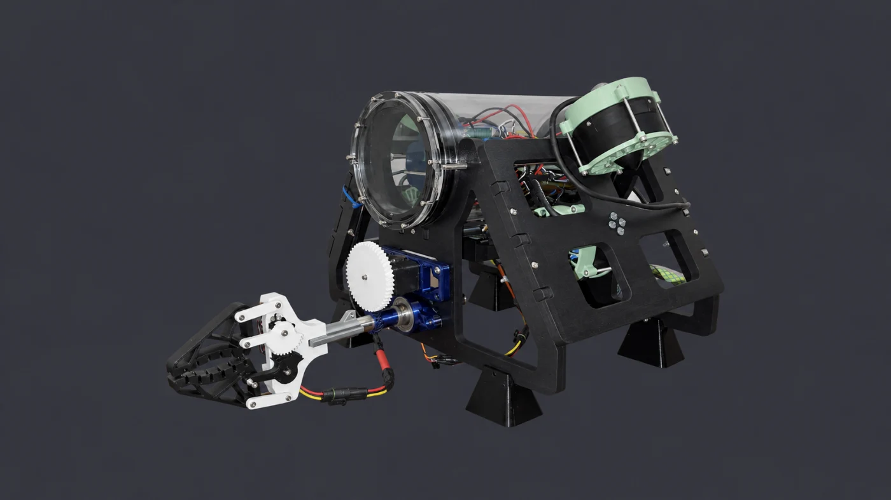
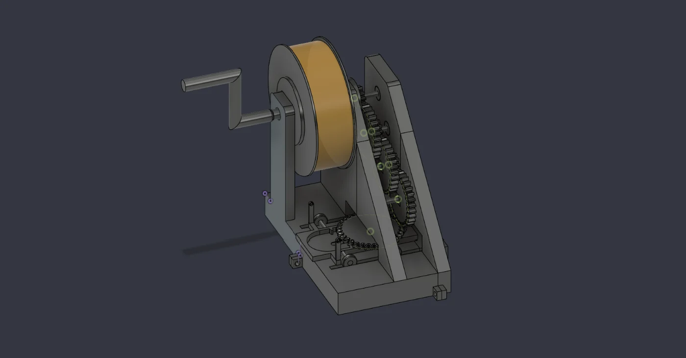
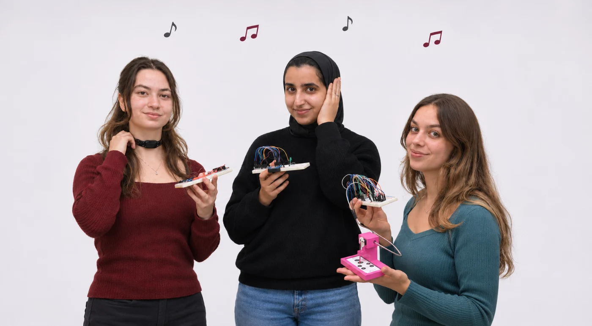
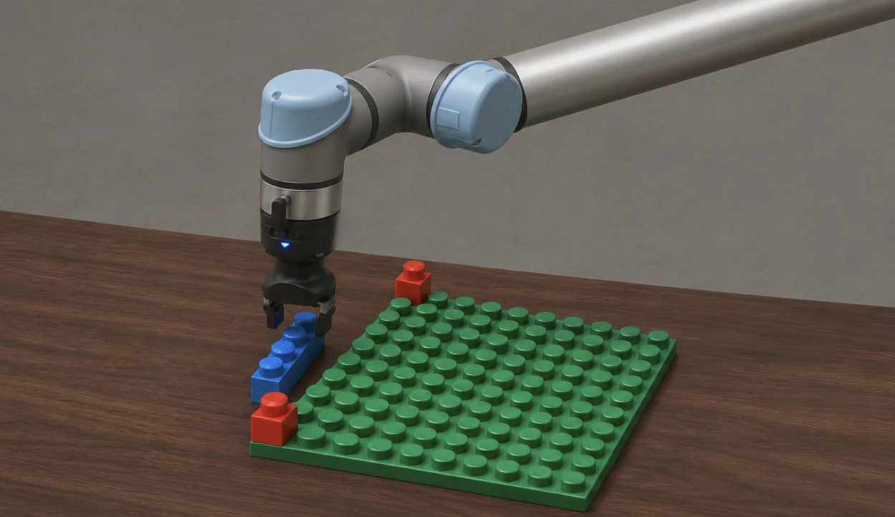
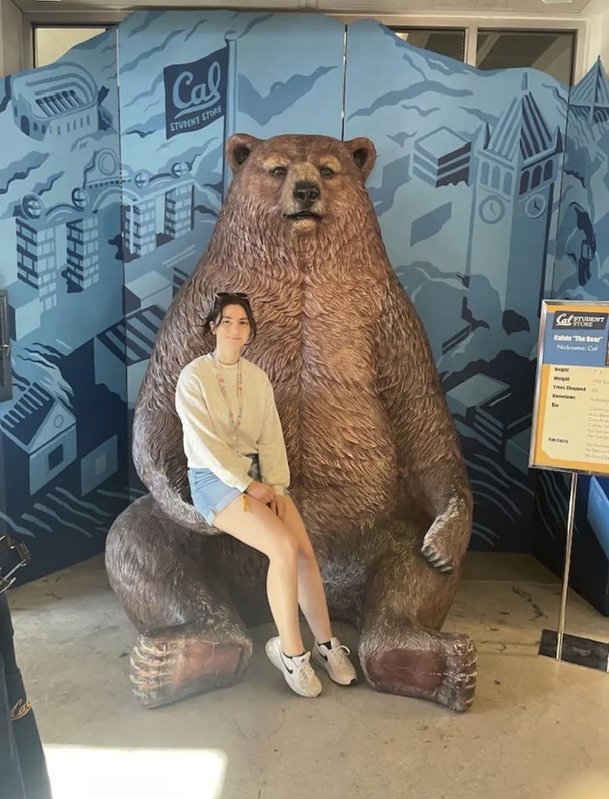

Joya
Stewart.
Project Archive
From working on a remotely operated vehicle at Pasadena City College to designing my own products at UC Berkeley
Check out the work I'm most proud of!
Selected projects.

Hydra: Underwater ROV ↗
How do you pick up an object underwater when your only view is through a camera? I helped build Hydra, a remotely operated vehicle with a custom claw, to tackle that challenge at the MATE ROV World Championship.

Manual filament Respooler ↗
Damaged, tangled, or AMS-incompatible spools? Our filament respooler offers a simple solution. A single hand crank rotates the spool while guiding filament evenly across its width for smooth, consistent winding.

Sing Buddy: Vocal Trainer↗
An interactive vocal trainer that listens to your singing, detects musical notes, and provides instant feedback to help improve pitch accuracy.

Robotic Blokus Opponent
A classic strategy game meets robotics. Challenge a UR7e robotic arm to Blokus as it identifies, picks up, and places game pieces.

My Journey
I began my engineering journey at Pasadena City College, where I found a wonderful community of students and professors who helped me discover what I was passionate about. When I joined the PCC MATE ROV Team, I had no idea that the challenges of designing and the joys of teamwork would inspire me to pursue engineering as a lifelong career. I changed my major from physics to mechanical engineering, applied to universities, and eventually made my way to UC Berkeley. There, I had countless opportunities through mechanical engineering research and class projects to refine my interests and discover the kinds of products I enjoy building.
Part of the fun comes from the challenge. Sometimes that means working through 57 design iterations; other times, it means navigating disagreements within a team. In the end, overcoming these challenges makes the final product that much better and seeing it come together that much more rewarding.
I expect to complete my B.S. in Mechanical Engineering in December 2026. I'm a member of Pi Tau Sigma, the mechanical engineering honor society, and a proud member of the Society of Women Engineers at UC Berkeley.
I created this website to showcase some of my favorite projects to potential employers, family, and friends. I hope everyone who visits enjoys learning about how these projects were designed and brought to life. I welcome emails with questions, comments, or even just a conversation about engineering!